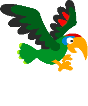

5
Use a teclas ↑ ou Espaço para voar.
| Posição | Jogador | Pontuação |
REGRAS: Cada obstáculo passado vale 1 ponto, cada fruto coletado vale 3 pontos e cada resposta correta vale 2 pontos.
Parabéns, Herói do Chauá! Você conseguiu alcançar a pontuação máxima no jogo "Chauá-educa" e se destacou como um verdadeiro defensor das aves e da vida selvagem. Ao fazer isso, você não apenas dominou os céus como Chauá, mas também fez a diferença na conscientização e na preservação da espécie ameaçada de extinção conhecida como papagaio-chauá. Seu comprometimento em superar os desafios do jogo e aprender sobre a importância da conservação do habitat do Chauá é notável. Continue compartilhando essa mensagem com os outros e inspirando-os a se juntar a essa causa crucial. Lembre-se, a natureza agradece a sua dedicação e esforço para proteger nossos amigos emplumados. O Chauá parrot e todas as espécies que compartilham seu habitat estão um passo mais próximos de um futuro mais brilhante, graças a você! Continue jogando, aprendendo e fazendo a diferença!
Desenvolvedor: https://github.com/SilvAlisson
Contribuidor: https://github.com/CodeLPrime
Créditos de Imagens e Audio: Lívia Teodosio e Alisson Silva
Créditos de Perguntas: Marilia Teodosio Costa e Flávia Gomes Ramos Araújo
Instituto Federal de Alagoas - IFAL
Alunas: Marilia Teodosio Costa e Flávia Gomes Ramos Araújo
Professores: Renato Romero e Joabe Gomes
Programa de Pós-Graduação em Tecnologias Ambientais - PPGTEC
Mestrado Profissional em Tecnologias Ambientais
Referências: